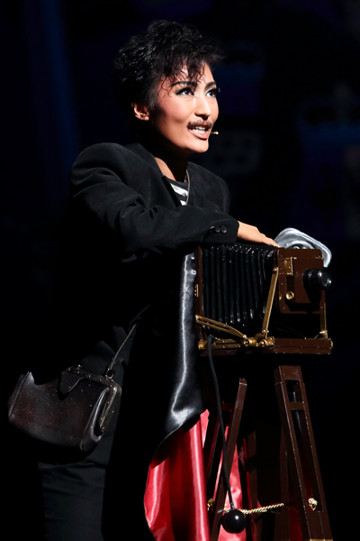

宝塚まとめ
望海風斗
雪組2番手
愛称：だいもん、のぞ

頭のネジ飛んじゃってる役を演じさせたら彼女の右に出る者はいないだろう。オーシャンズ11のテリー・ベネディクトやラスト・タイクーンのブロンソン、 エリザベートのルイジ・ルキーニ等、本当に悪～い役であるが、彼女の振り切れた演技が寧ろ好印象で、だいもん落ちしたファンは多くいる。 勿論悪役だけでなく、バウホール初主演ヴィクトリアンジャズのナイジェルでは怪しさと品の良さをバランスよく演じ、大変好評であったことからも 彼女の演技力の高さが伺えるであろう。魅力は演技だけでなく、その美声と言ったら現役タカラジェンヌではトップクラス。 男役特有の艶やかな低音から娘役顔負けの透き通る高音まで、どんな難曲でもさらりと歌いのけてしまうのだから恐ろしい。 ダンスはみんなの兄貴蘭寿とむの元で学んだ元花男だけあり、キザに華麗に踊るわけである。ここまで三拍子揃ったタカラジェンヌはなかなかいない。
なぜ彼女がこうなりえたかと言ったら、宝塚への溢れんばかりの愛と彼女の真面目な性質といえよう。そう、彼女は歴代随一と思われるほどの"ヅカオタ" なのである。その"ヅカオタ性"は例えば、ファン時代に天海祐希さんに語りかける日記を書いていたというエピソードや、 番組企画で訪れたキャトルレーヴでカメラを忘れて買い物を始めたこと、お宝ブロマイドやお気に入りVHSの量が一人だけおかしいことから明らかになった。 ちなみに天海日記エピソードで彼女の日記に記されていた「天海さんもそんなことある？」は昨年の宝塚流行語大賞に選ばれている。
ただ一つ欠点を挙げるなら、アドリブが苦手という点だろうか。無茶振りされてあたふたしている、そんなだいもんも愛しいよね！！！